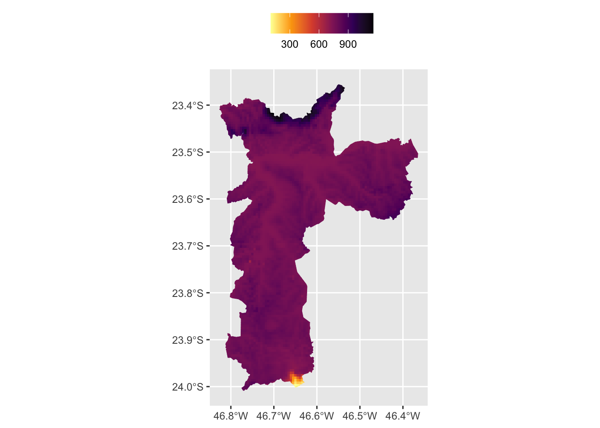

Warning: package 'dplyr' was built under R version 4.2.3
Attaching package: 'dplyr'
The following objects are masked from 'package:stats':
filter, lag
The following objects are masked from 'package:base':
intersect, setdiff, setequal, union
library(sf)
Warning: package 'sf' was built under R version 4.2.3
Linking to GEOS 3.11.0, GDAL 3.5.3, PROJ 9.1.0; sf_use_s2() is TRUE
library(geobr)
Warning: package 'geobr' was built under R version 4.2.3
library(osmdata)
Data (c) OpenStreetMap contributors, ODbL 1.0. https://www.openstreetmap.org/copyright
library(raster)
Loading required package: sp
Warning: package 'sp' was built under R version 4.2.3
Attaching package: 'raster'
The following object is masked from 'package:dplyr':
select
library(elevatr)
elevatr v0.99.0 NOTE: Version 0.99.0 of 'elevatr' uses 'sf' and 'terra'. Use
of the 'sp', 'raster', and underlying 'rgdal' packages by 'elevatr' is being
deprecated; however, get_elev_raster continues to return a RasterLayer. This
will be dropped in future versions, so please plan accordingly.
library(BAMMtools)
Warning: package 'BAMMtools' was built under R version 4.2.3
Loading required package: ape
Attaching package: 'ape'
The following objects are masked from 'package:raster':
rotate, zoom
The following object is masked from 'package:dplyr':
where
OpenStreetMap
Por “elementos de mapas” nos referimos aqui a ruas, avenidas, rios, etc. Isto é, elementos que costumam aparecer em mapas que não . O código abaixo acessa a API do OpenStreetMap para baixar todas as principais ruas do bairro Liberdade em São Paulo. Note que o processo para converter estes objetos para sf é um pouco trabalhoso.
Code
library(osmdata)## osmdata -----------------------------------------------------------------# Define bboxbbox <-getbb("Liberdade, São Paulo, Brazil")# Base queryqr <-opq(bbox)# Add feature requests to query# All roadsqr_roads <-add_osm_feature(qr, key ="highway")# Only big roadsqr_big_streets <-add_osm_feature( qr,key ="highway",value =c("motorway", "primary", "motorway_link", "primary_link"))# Only medium roadsqr_med_streets <-add_osm_feature( qr,key ="highway",value =c("secondary", "tertiary", "secondary_link", "tertiary_link"))# Only small roadsqr_small_streets <-add_osm_feature( qr,key ="highway",value =c("residential", "living_street", "unclassified", "service","footway"))# Downloadroads <-osmdata_sf(q = qr_roads)big_streets <-osmdata_sf(q = qr_big_streets)med_streets <-osmdata_sf(q = qr_med_streets)small_streets <-osmdata_sf(q = qr_small_streets)s1 <- big_streets$osm_lines %>%st_transform(crs =4674)s2 <- med_streets$osm_lines %>%st_transform(crs =4674)s3 <- small_streets$osm_lines %>%st_transform(crs =4674)
Por fim, vale mostrar um exemplo de um objeto espacial em formato raster. Vamos montar um mapa que monta um grid retangular com a altura de cada ponto na cidade de São Paulo. Os dados são importados pelo pacote elevatr.
#> Importa o shape file do limite do município de São Pauloborder <-read_municipality(3550308, showProgress =FALSE)
Using year 2010
#> Importa dados com a elevação da cidadeelevation <- elevatr::get_elev_raster(border, z =7)
Mosaicing & Projecting
Note: Elevation units are in meters.
#> Transforma os dados em polígonos e converte para sfelevation <- raster::rasterToPolygons(elevation)elevation <-st_as_sf(elevation)names(elevation)[1] <-"elevation"#> Converte CRS e junta o shape de altitude com o shape da cidadespo_alti <- elevation %>%st_transform(crs =4674) %>%st_intersection(border) %>%filter(st_is_valid(.))
Warning: attribute variables are assumed to be spatially constant throughout
all geometries
O código abaixo gera o mapa. Note que usamos uma escala de cores contínua.
ggplot() +geom_sf(data = spo_alti, aes(color = elevation, fill = elevation)) +scale_color_viridis_c(name ="", option ="inferno", direction =-1) +scale_fill_viridis_c(name ="", option ="inferno", direction =-1) +coord_sf() +theme(legend.position ="top")

Novamente, é possível discretizar os dados para melhorar a visualização.
Como último exemplo, vamos combinar os dados de altitude/elevação com os dados de ruas e avenidas. Para tornar o exemplo mais simples vamos escolher a cidade de São Caetano do Sul, que é uma cidade relativamente pequena em extensão. O código abaixo é adaptado deste post, em que mostro em detalhes como fazer este tipo de mapa para qualquer cidade do Brasil.
Warning: attribute variables are assumed to be spatially constant throughout
all geometries
Code
jbreaks <- BAMMtools::getJenksBreaks(spo_alti$elevation, k =5)spo_alti <- spo_alti %>%mutate(jenks_group =factor(findInterval(elevation, jbreaks)) )jbreaks <-round(jbreaks, -1)jlabels <-paste(jbreaks, jbreaks[-1], sep ="--")jlabels[length(jlabels)] <-paste0(max(jbreaks), "+")get_streets_altitude <-function(altitude, streets) {stopifnot(any(colnames(altitude) %in%"jenks_group"))#> Get all groups groups =levels(altitude$jenks_group)#> For each group get the full polygon and join with streets join_streets =function(group) { poly = altitude %>%filter(jenks_group == group) %>%st_union(.) %>%st_as_sf() joined =suppressWarnings(st_intersection(streets, poly))return(joined) }#> Apply the function to all groups street_levels = parallel::mclapply(groups, join_streets)#> Bind all results togethernames(street_levels) = groups out =bind_rows(street_levels, .id ="level")return(out)}streets_alti <-get_streets_altitude(spo_alti, roads_border)